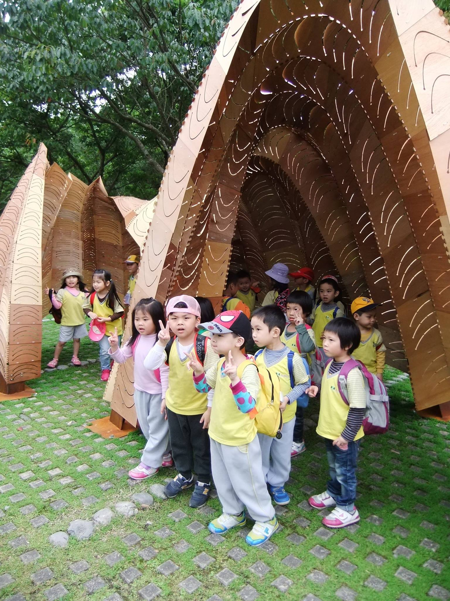
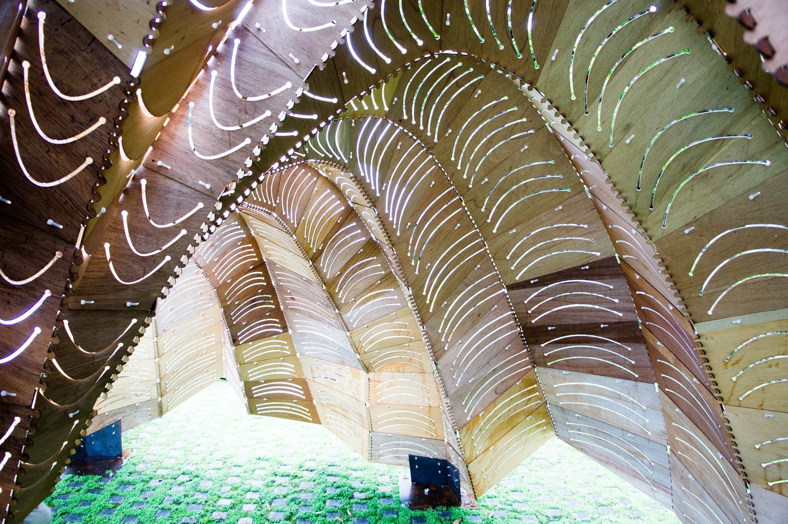
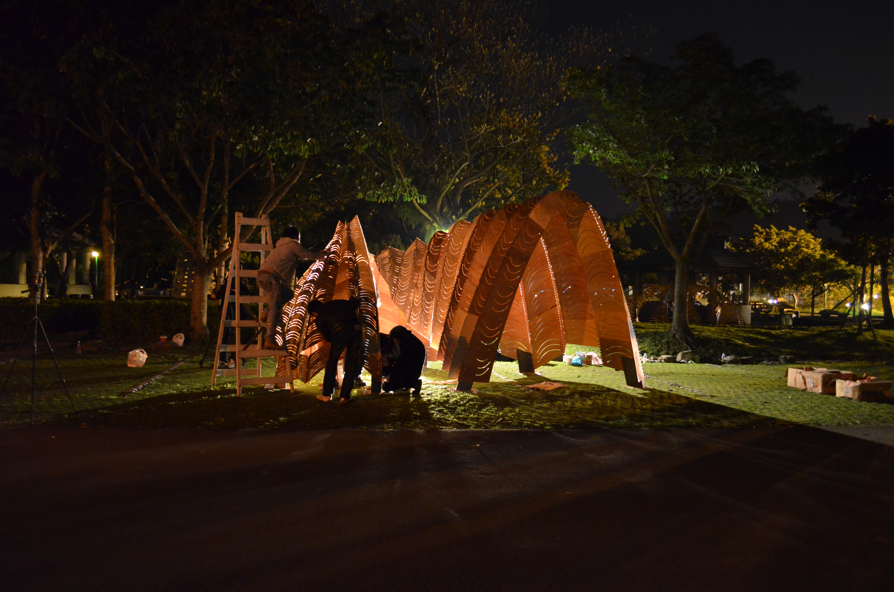
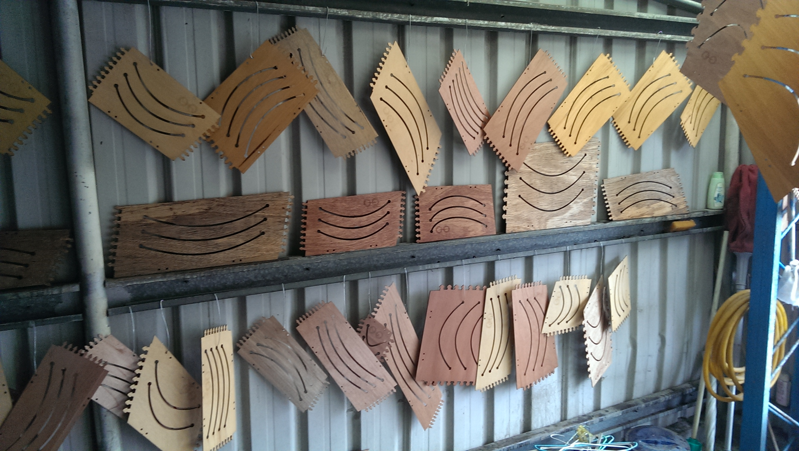
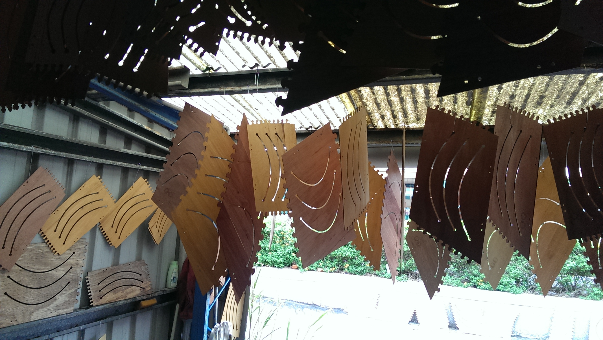
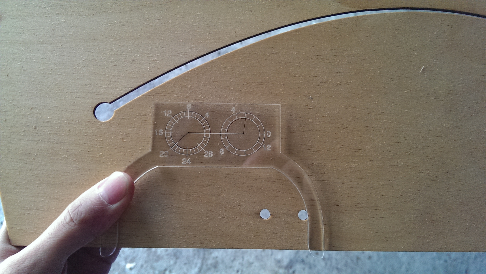
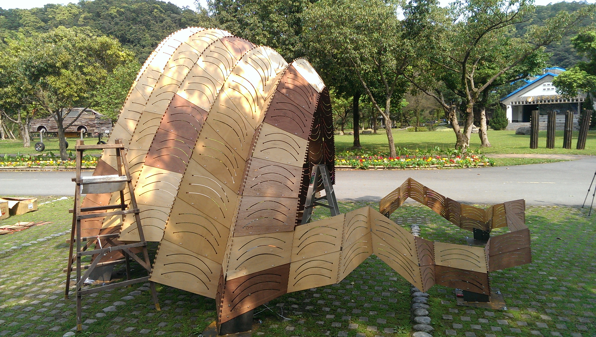
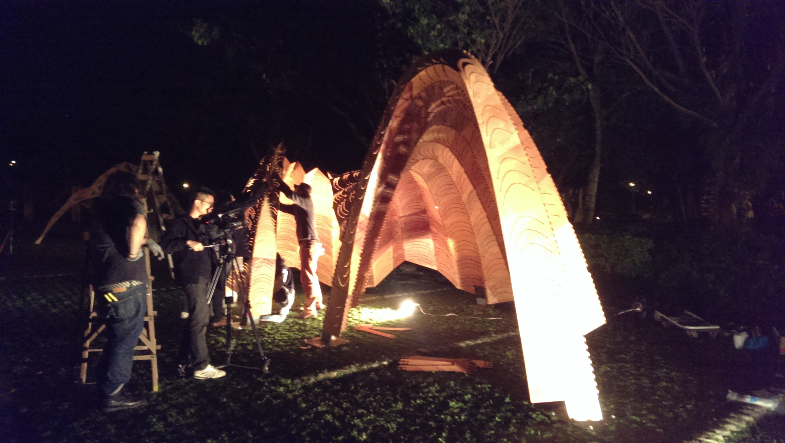
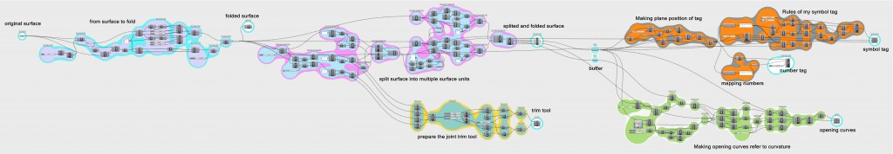
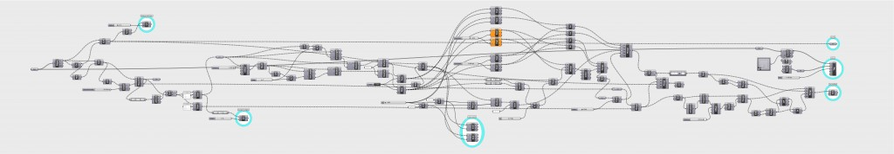

Butterfly Effect Pavilion in I-Lan Green Expo 2014

–蝶跡– Description: 蝶跡的設計啓發於蝴蝶幼蟲，生長成蝴蝶展翅瞬間的造型，以用於圍塑空間形態以及外觀紋理。在結構上也與蝴蝶翅膀振動為靈感之啓發，以最輕薄的木夾板去挑戰材料之彎曲性與結構性，進而產生動態平衡。另外在構造上運用電腦運算技術使複雜造型由416片單元組合而成，以極簡的拉鍊扣合做法連接單元與單元進而產生極複雜細部，在正反的拱肋結構演算下，整體重量平均分攤至7個底座，使整體結構輕量化。 實際走入蝶跡展示庭，空間經驗上，太陽撒入木板因彎曲曲度而刻畫的開口中，微風飄動過整體結構，結構體輕輕飄動而陽光如在樹蔭下似閃爍，就像蝴蝶翩翩起舞輕過留下痕跡一般優雅。











–pavilionButterflyEffect_Geometry– Not-found
–pavilionButterflyEffect_step01 Definition– 
–pavilionButterflyEffect_step02 Definition– 
–pavilionButterflyEffect_step03 Definition– Not-found
–pavilionButterflyEffect_step04 Definition– Not-found
–Geometry Size Selection Filter Python Code–
### --Written by Gene Ting-Chun Kao-- ### import rhinoscriptsyntax as rs ids = rs.GetObjects("select surfaces", rs.filter.polysurface) area = rs.GetInteger("selected area limits", 10, 0) rs.EnableRedraw(False) print "Results: All", len(ids), "surfaces selected." Count = 0 for i in ids: b = rs.SurfaceArea(i) if b: if b[0] < area: rs.SelectObject(i) Count += 1 print "Results: Get", Count, "small objects." rs.EnableRedraw(True)